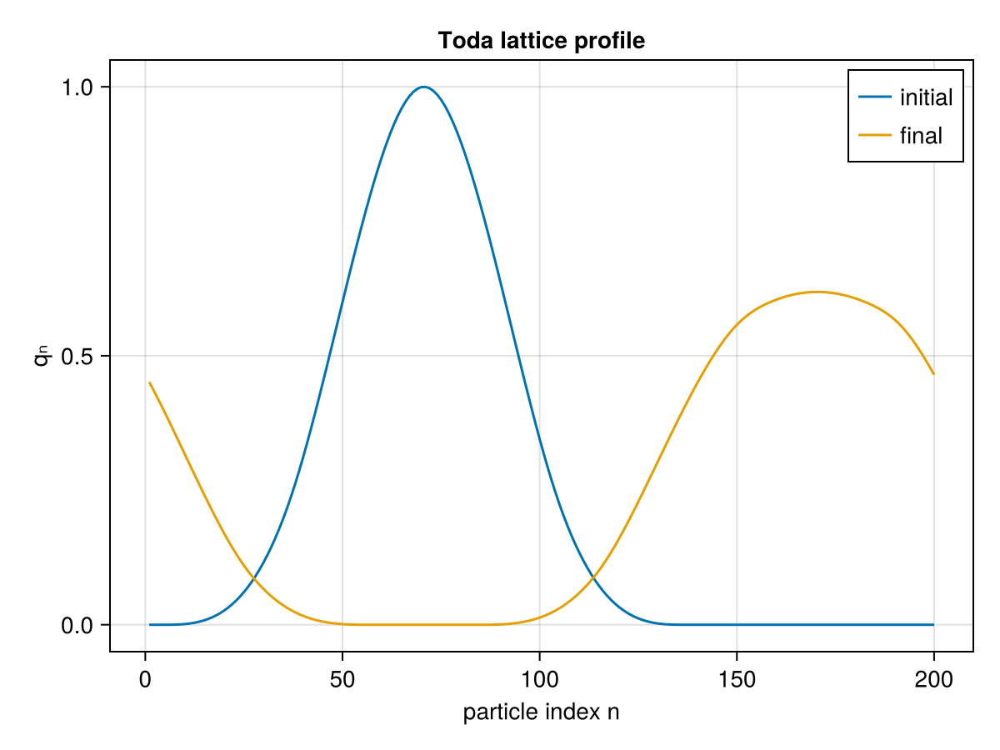

Toda Lattice
The Toda lattice is a prime example of an completely-integrable system, i.e. a Hamiltonian system evolving in $\mathbb{R}^{2n}$ that has $n$ Poisson-commuting invariants of motion (see [3]). It is named after Morikazu Toda who used it to model a one-dimensional crystal [7].
The Hamiltonian of the Toda lattice takes the following form:
\[ H(q, p) = \sum_{n\in\mathbb{Z}}\left( \frac{p_n^2}{2} + \alpha e^{q_n - q_{n+1}} \right).\]
In practice we work with a finite number of particles $N$ and impose periodic boundary conditions:
\[\begin{aligned} q_{n+N} & \equiv q_n \\ p_{n+N} & \equiv p_n. \end{aligned}\]
Hence we have:
\[ H(q, p) = \sum_{n=1}^{N-1} \left( \frac{p_n^2}{2} + \alpha e^{q_n - q_{n+1}} \right) + \frac{p_N^2}{2} + \alpha e^{q_N - q_1}.\]
We can model the evolution of a thin pulse in this system:
using GeometricProblems, GeometricIntegrators, CairoMakie # hide
problem = GeometricProblems.TodaLattice.hodeproblem(; timespan = (0.0, 2000.))
sol = integrate(problem, ImplicitMidpoint())
time_steps = 0:10:length(sol.q)
fig = Figure()
ax = Axis(fig[1, 1])
mblue = RGBf(31 / 256, 119 / 256, 180 / 256)
lines!(ax, sol.q[0, :], label = "t = $(sol.t[0])", color = mblue)
framerate = 30
mblue =
record(fig, "toda_animation.mp4", time_steps;
framerate = framerate) do time_step
empty!(ax)
lines!(ax, sol.q[time_step, :], label = "t = $(sol.t[time_step])", color = mblue)
ylims!(ax, 0., 1.)
axislegend(ax; position = (1.01, 1.5), labelsize = 8)
end
Docs.HTML("""<video mute autoplay loop controls src="toda_animation.mp4" />""")As we can see the thin pulse separates into two smaller pulses an they start traveling in opposite directions until they meet again at time $t\approx120$. But it is important to note that the right peak at time $120$ is below the one at time $0$. This is not a numerical artifact but a feature of the Toda lattice!
A static snapshot of the initial and the evolved lattice profile can be produced directly with CairoMakie:
using GeometricProblems.TodaLattice
using GeometricIntegrators: integrate, ImplicitMidpoint
using CairoMakie
sol = integrate(TodaLattice.hodeproblem(; timespan = (0.0, 100.0)), ImplicitMidpoint())
fig = Figure()
ax = Axis(fig[1, 1]; xlabel = "particle index n", ylabel = "qₙ", title = "Toda lattice profile")
lines!(ax, sol.q[0, :]; label = "initial")
lines!(ax, sol.q[end, :]; label = "final")
axislegend(ax)
fig
Library functions
GeometricProblems.TodaLattice — Module
The Toda lattice is a model for a one-dimensional crystal named after its discoverer Morikazu Toda [7].
It is a prime example of a non-trivial completely integrable system.
It is configured by the number of points $N$ in the periodic lattice and by $\alpha$, which adjusts the strength of the interactions in the lattice.
Like the number of interior points of LinearWave, $N$ fixes the size of the system: it sets the number of degrees of freedom and the summation bounds, so it cannot survive symbolize and hence cannot be a system parameter. It is instead a leading positional argument of the problem constructors, defaulting to Ñ = 200, and hamiltonian/lagrangian take it as a trailing argument. The only system parameter proper is $\alpha$.
hodeproblem, lodeproblem, hodeensemble and lodeensemble use hand-written vector fields by default: in-place v, f, ϑ, g and ω! over a shared ∇V! kernel. Passing symbolic = true generates the equations of motion with EulerLagrange via hamiltonian_system or lagrangian_system instead, which agrees to round-off and is kept for cross-checking.
The symbolic route is unusable at the default size. EulerLagrange builds the $2N × 2N$ Lagrange two-form by symbolically differentiating a dense matrix, which at $N = 200$ is 160 k entries: lagrangian_system(200, …) takes 73 s and emits 8.4 MB of code whose first ω evaluation costs a further 82 s — all for a two-form that no integrator in GeometricIntegrators ever evaluates and that GeometricEquations.check_methods skips. Construction grows as $N^{2.4}$ and the generated ω as $N^2$, while hodeproblem/lodeproblem in their default form build in a tenth of a millisecond at any size.
Per call the two are much closer than for the linear wave, because both force functions are dominated by the $N$ exponentials rather than by arithmetic: the generated force is in fact 5–12% faster over $N = 8$ to $200$, while the hand-written H and L are 1.3–2× faster and v, ϑ and g change places with size. So the 155 s of setup a symbolic = true LODE pays at $N = 200$ would take 6.9 × 10⁹ force evaluations to earn back — around six orders of magnitude more than a default run performs. See benchmark/toda_lattice.jl.
GeometricProblems.TodaLattice.compute_initial_condition — Method
Produces initial conditions for the bump function. Here the $p$-part is initialized with zeros.
GeometricProblems.TodaLattice.compute_initial_condition2 — Method
Produces initial condition for the bump function. Here the $p$-part is initialized as $-\mu\partial_\xi u_0(\xi, \mu)$.
GeometricProblems.TodaLattice.h — Method
Third-degree spline that is used as a basis to construct the initial conditions.
GeometricProblems.TodaLattice.hamiltonian_system — Method
hamiltonian_system(N, parameters)The EulerLagrange HamiltonianSystem for the Toda lattice on N points, from which hodeproblem(…; symbolic = true) takes its v, f and H.
Far cheaper than lagrangian_system at every size, since a Hamiltonian system carries no two-form — 1.2 s at the default Ñ = 200, against a tenth of a millisecond for the hand-written route.
GeometricProblems.TodaLattice.hodeensemble — Function
hodeensemble(N, q₀, p₀; timespan, timestep, parameters, symbolic)Hamiltonian ensemble for the Toda lattice (varying initial conditions and/or parameters).
Takes the same arguments as hodeproblem, with q₀, p₀ and/or parameters given as vectors of samples.
GeometricProblems.TodaLattice.hodeproblem — Function
hodeproblem(N, q₀, p₀; timespan, timestep, parameters, symbolic)Hamiltonian problem for the Toda lattice on N points.
Constructor with default arguments:
hodeproblem(
N = 200,
q₀ = compute_initial_q(μ, N),
p₀ = zero(q₀);
timespan = (0.0, 120.0),
timestep = 0.1,
parameters = (α = 0.64,),
symbolic = false
)With symbolic = true the equations of motion are generated with EulerLagrange via hamiltonian_system instead of using the hand-written vector fields. The two agree to round-off; the symbolic route is kept for cross-checking and costs 1.2 s to build at N = 200.
GeometricProblems.TodaLattice.lagrangian_system — Method
lagrangian_system(N, parameters)The EulerLagrange LagrangianSystem for the Toda lattice on N points, from which lodeproblem(…; symbolic = true) takes its ϑ, f, g, ω and L.
This is the expensive one: it builds the $2N × 2N$ two-form by differentiating a dense matrix, so its cost grows as $N^{2.4}$ and reaches 73 s at the default Ñ = 200 — followed by another 82 s the first time the generated ω is evaluated. See the module docstring and benchmark/toda_lattice.jl.
GeometricProblems.TodaLattice.lodeensemble — Function
lodeensemble(N, q₀, p₀; timespan, timestep, parameters, symbolic)Lagrangian ensemble for the Toda lattice (varying initial conditions and/or parameters).
Takes the same arguments as lodeproblem, with q₀, p₀ and/or parameters given as vectors of samples.
GeometricProblems.TodaLattice.lodeproblem — Function
lodeproblem(N, q₀, p₀; timespan, timestep, parameters, symbolic)Lagrangian problem for the Toda lattice on N points.
Constructor with default arguments:
lodeproblem(
N = 200,
q₀ = compute_initial_q(μ, N),
p₀ = zero(q₀);
timespan = (0.0, 120.0),
timestep = 0.1,
parameters = (α = 0.64,),
symbolic = false
)With symbolic = true the equations of motion are generated with EulerLagrange via lagrangian_system instead of using the hand-written vector fields. The two agree to round-off, but the symbolic route takes 73 s to build at N = 200, and 155 s in all before the first step — see the module docstring.
GeometricProblems.TodaLattice.potential — Method
potential(q, parameters, N)The exponential nearest-neighbour interaction of the periodic Toda lattice on N points,
\[V(q) = \alpha \sum_{n = 1}^{N} e^{q_n - q_{n+1}}, \qquad q_{N+1} \equiv q_1 .\]
Both the Hamiltonian and the Lagrangian take N as a trailing argument (as in LinearWave) rather than reading it from parameters: it fixes the number of degrees of freedom and the summation bounds, so it has to be a plain integer and cannot survive symbolize.
GeometricProblems.TodaLattice.ω! — Method
ω!(Ω, t, q, params)The Lagrange two-form $ω = dθ$ of this regular Lagrangian, where $θ = ϑ_i \, dq^i$.
A regular Lagrangian is a second-order system of $N$ equations, equivalent to a first-order system of $2N$, so Ω is the $2N × 2N$ form on $(q, \dot q)$. In block form it is $[∂ϑ_i/∂q_j - ∂ϑ_j/∂q_i \; -M^T; \; M \; 0]$; since $ϑ = ∂L/∂\dot q = \dot q$ depends on the velocities alone and the mass matrix is the identity, the upper-left block vanishes and what remains is the canonical $[0 \; -I; \; I \; 0]$.
This is the convention EulerLagrange's LagrangianSystem produces, so lodeproblem agrees whether or not symbolic = true. Note that no integrator in GeometricIntegrators evaluates ω and GeometricEquations.check_methods skips it — which is what makes the 8.4 MB of code EulerLagrange emits for it at the default size, and the 82 s its first evaluation then costs, pure overhead.
GeometricProblems.TodaLattice.∇V! — Function
∇V!(dV, q, parameters, N, scale = 1)scale times the gradient $∂V/∂q$ of the periodic Toda potential, written into dV. scale = -1 gives the force $-∂V/∂q$ directly, which is what the force functions want and saves the extra sweep over the output that negating afterwards would cost.
Writing $E_n = e^{q_n - q_{n+1}}$ with cyclic indices, $q_j$ enters $V = \alpha \sum_n E_n$ with $+1$ in the term $n = j$ and with $-1$ in the term $n = j - 1$, so
\[\frac{∂V}{∂q_j} = \alpha \, (E_j - E_{j-1}), \qquad E_0 \equiv E_N .\]
$E_N$ is both the last term and $E_0$, so it is computed once, before anything is written, and kept in a scalar; the loop then carries $E_{j-1}$ in a second scalar and writes $∂V/∂q_j$ as it goes. So the kernel makes a single pass, allocates nothing, evaluates each exponential exactly once — the expensive part — and never reads an entry of dV back, which is what makes it safe even when dV aliases q.
The one entry that has to be peeled off is the last, and that is also the only case analysis: the expression is otherwise correct for every $N ≥ 1$. At $N = 1$ the loop body never runs and $E_1 = e^0 = 1$ leaves $∂V/∂q_1 = c \, (E_1 - E_1) = 0$, which is right, since $V$ is then constant.
The cyclic wrap-around is the one thing here that is easy to get wrong and that nothing else checks, so test/toda_lattice_tests.jl verifies this against a central finite difference of potential, which shares no code with it, at several N including N = 1 and N = 2 — and at each of them with dV aliased onto q, which is the property the single pass buys.
- [3]
- V. I. Arnold. Mathematical methods of classical mechanics. Vol. 60 of Graduate Texts in Mathematics (Springer Verlag, Berlin, 1978).
- [7]
- M. Toda. Vibration of a chain with nonlinear interaction. Journal of the Physical Society of Japan 22, 431–436 (1967).